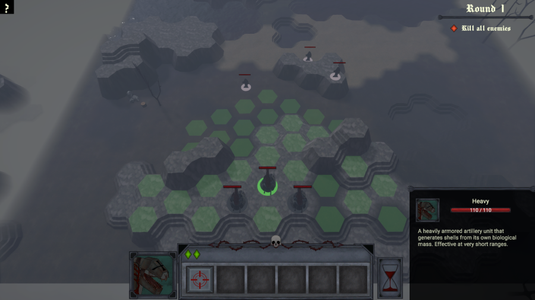
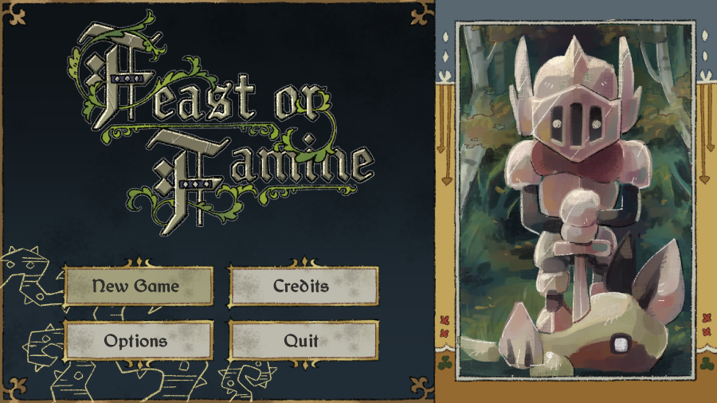
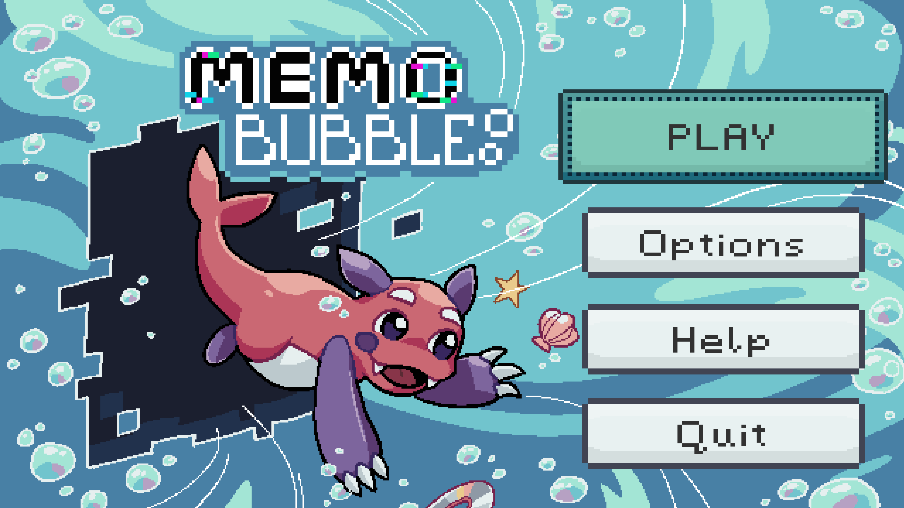
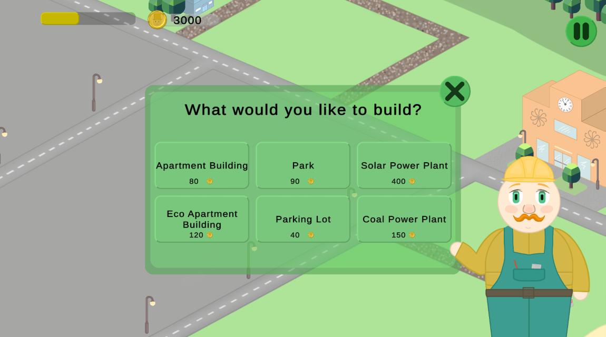

Game programmer

A prototype turn-based strategy game where you control mutated human weapons on their road to destroy their creators.

A third person resource gathering game with melee combat, light survival elements and fishing.

2D platformer with early 2000's aesthetics heavily inspired by the classic Bubble Bobble.

Small scale 2D city building game for mobile where you need to balance your finances and the city's pollution level.
I'm a game programmer based in Tampere, Finland. I have experience in both 2D and 3D projects with Unity and Unreal
Engine. I especially enjoy creating enemy and other NPC behaviours and underlying gameplay logic. I like learning
new programming related stuff and making all sorts of projects. I graduated from Tampere University of Applied Sciences
Games Acadamy in June 2026.
I'm a huge fan of Jujutsu Kaisen and I love cats.